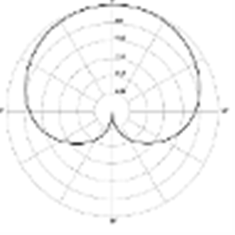
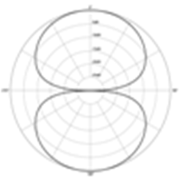
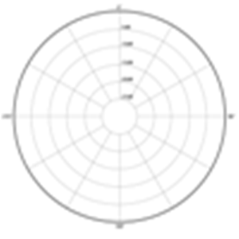

Hi, My name is Phil, creator of guitarpickers, I was born in 1956 along with the birth of British Rock ‘n’ Roll music, my passion and love of the guitar began at a very young age, and by the age of four my parents took me the see the legendary guitarist Bert Weedon and I was lucky enough to get to meet him, and remember saying to him.
“Bert I want to be a musician when I grow up” and he replied “well you can’t do both son” But who wants to grow up anyway!
This webpage is dedicated to my passion for fingerstyle blues guitar and the Fender Telecaster guitar
The phonograph, record player, or gramophone, is a device introduced in 1877 that has had continued common use for reproducing (playing) sound recordings; although when first developed, the phonograph was used to both record and reproduce sounds. The recordings played on such a device generally consist of wavy lines that are either scratched, engraved, or grooved onto a rotating cylinder or disc. As the cylinder or disc rotates, a stylus or needle traces the wavy lines and vibrates to reproduce the recorded sound waves.
The phonograph was invented in 1877 by Thomas Edison. While other inventors had produced devices that could record sounds, Edison's phonograph was the first to be able to reproduce the recorded sound. His phonograph originally recorded sound onto a tinfoil sheet phonograph cylinder. Alexander Graham Bell's Volta Laboratory made several improvements in the 1880s, including the use of wax-coated cardboard cylinders, and a cutting stylus that moved from side to side in a "zig zag" pattern across the record. Then at the turn of the century, Emile Berliner initiated the transition from phonograph cylinders to gramophone records: flat, double-sided discs with a spiral groove running from the periphery to near the center. Other improvements were made throughout the years, including modifications to the turntable and its drive system, the needle and stylus, and the sound and equalization systems.
The gramophone record was one of the dominant audio recording formats throughout much of the 20th Century. However, that status was eventually replaced by the Compact Disc and other Digital recording formats. For more visit wikipedia.org
Methods and media for sound recording are varied and have undergone significant changes between the first time sound was actually recorded for later playback until now. For more on the history of sound recording wikipedia.org
American audio engineer John T. Mullin and entertainer Bing Crosby were key players in the commercial development of magnetic tape. Crosby was stunned by the amazing sound quality and instantly saw the huge commercial potential of the new machines.
Mullin was given two suitcase-sized AEG 'Magnetophon' high-fidelity recorders and fifty reels of recording tape. He had them shipped home and over the next two years he worked on the machines constantly, modifying them and improving their performance. His major aim was to interest Hollywood studios in using magnetic tape for movie soundtrack recording.
Ampex is an American electronics company founded in 1944 by Alexander M. Poniatoff. The name AMPEX is an acronym, created by its founder, which stands for Alexander M. Poniatoff Excellence. The company's first tape recorder, the Ampex Model 200, revolutionized the radio and recording industries. For more on Ampex wikipedia.org
Much of the credit for the development of multitrack recording goes to guitarist, composer and technician Les Paul, who also helped design the famous electric guitar that bears his name. His experiments with tapes and recorders in the early 1950s led him to order the first custom-built eight-track recorder from Ampex, and his pioneering recordings with his then wife, singer Mary Ford,, were the first to make use of the technique of multitracking to record separate elements of a musical piece asynchronously - that is, separate elements could be recorded at different times. Paul's technique enabled him to listen to the tracks he had already taped and record new parts in time alongside them. For more on multitrack recording wikipedia.org
The LP (Long Play), or long-playing microgroove record, is a format for phonograph (gramophone) records, an analog sound storage medium. Introduced by Columbia Records on June 21, 1948 during a press conference at the Waldorf-Astoria Hotel in New York City, it was soon adopted as a new standard by the entire record industry. Apart from relatively minor refinements and the important later addition of stereophonic sound capability, it has remained the standard format for vinyl "albums" up to the present, For more on LP records visit wikipedia.org
The Compact Cassette, also called audio cassette, cassette tape, cassette, or simply tape, is a magnetic tape sound recording format. It was designed originally for dictation, but improvements in fidelity led the Compact Cassette to supplant the Stereo 8-track cartridge and reel-to-reel tape recording in most non-professional applications. Its uses ranged from portable audio to home recording to data storage for early microcomputers. Between the early 1970s and the late 1990s, the cassette was one of the two most common formats for prerecorded music, first alongside the LP record and later the Compact Disc. For more on the cassette tape visit wikipedia.org
The Compact Disc, or CD for short, is an optical disc used to store digital data. It was originally developed to store and play back sound recordings only, but the format was later adapted for storage of data (CD-ROM), write-once audio and data storage (CD-R), rewritable media (CD-RW), Video Compact Discs (VCD), Super Video Compact Discs (SVCD), PhotoCD, PictureCD, CD-i, and Enhanced CD. Audio CDs and audio CD players have been commercially available since October 1982. For more on the compact disc visit wikipedia.org
Digital Audio Tape (DAT or R-DAT) is a signal recording and playback medium developed by Sony and introduced in 1987. In appearance it is similar to a compact audio cassette, using 4 mm magnetic tape enclosed in a protective shell, but is roughly half the size at 73 mm x 54 mm x 10.5 mm. As the name suggests, the recording is digital rather than analog. DAT has the ability to record at higher, equal or lower sampling rates than a CD (48, 44.1 or 32 kHz sampling rate respectively) at 16 bits quantization. If a digital source is copied then the DAT will produce an exact clone, unlike other digital media such as Digital Compact Cassette or non-Hi-MD MiniDisc, both of which use a lossy data reduction system. For more on Digital Audio Tape visit wikipedia.org
Alesis Digital Audio Tape or ADAT is a magnetic tape format used for the simultaneous digital recording of eight analog audio or digital audio tracks at once, onto a Super VHS tape that is used by consumer VCRs. For more on Alesis Digital Audio Tape visit wikipedia.org
The first incarnation of today's Pro Tools started life in 1984 as Sound Designer, while the pair were creating and selling drum sound chips under their Digidrums label. Sound Designer was originally designed to edit sounds for the E-MU Emulator sampling keyboard.
The first version of Pro Tools was launched in 1991 offering four tracks. Digidesign continued to improve Pro Tools, adding a sequencer and more tracks with the system offering recording at 16-bit and 44.1 kHz. In 1997 Pro Tools had eventually reached 24-bit and 48 track versions. At this point, the migration from more conventional studio technology to the Pro Tools platform took place within the industry. For more on Pro Tools visit wikipedia.org
Cakewalk was a MIDI sequencer developed by Twelve Tone Systems, Inc. (the company now known as Cakewalk, Inc.) originally for DOS, starting with version Cakewalk 1.0 in 1987, and beginning in 1991, for Windows 3.0. Cakewalk for DOS, up until version 4.0, required an MPU-401 MIDI interface card operating in intelligent mode, while later versions relied on the dumb UART mode only. Cakewalk was delivered in two versions, Cakewalk Pro and Cakewalk Express. For more on Cakewalk visit wikipedia.org
Cubase is a music software product developed by German musical software and equipment company Steinberg for music recording, arranging and editing as part of a Digital Audio Workstation. It is one of the oldest DAWs to still enjoy widespread use. The first version, which ran on the Atari ST computer and recorded via MIDI only, was released in 1989. For more on Cubase visit wikipedia.org
Logic Pro is a hybrid 32 / 64 bit digital audio workstation and MIDI sequencer software application for the Mac OS X platform. Originally created by German software developer Emagic, Logic Pro became an Apple product when Apple bought Emagic in 2002. Logic Pro is part of Apple's Logic Studio bundle of professional music applications. For more on Logic Pro visit wikipedia.org
A sound card (also known as an audio card) is an internal computer expansion card that facilitates the input and output of audio signals to and from a computer under control of computer programs. The term sound card is also applied to external audio interfaces that use software to generate sound, as opposed to using hardware inside the PC. Typical uses of sound cards include providing the audio component for multimedia applications such as music composition, editing video or audio, presentation, education and entertainment (games) and video projection. For more on sound cards visit wikipedia.org
Dynamic microphones work via electromagnetic induction. They are robust, relatively inexpensive and resistant to moisture. This, coupled with their potentially high gain before feedback, makes them ideal for on-stage use.
Moving-coil microphones use the same dynamic principle as in a loudspeaker, only reversed. A small movable induction coil, positioned in the magnetic field of a permanent magnet, is attached to the diaphragm. When sound enters through the windscreen of the microphone, the sound wave moves the diaphragm. When the diaphragm vibrates, the coil moves in the magnetic field, producing a varying current in the coil through electromagnetic induction.
A single dynamic membrane does not respond linearly to all audio frequencies. Some microphones for this reason utilize multiple membranes for the different parts of the audio spectrum and then combine the resulting signals. Combining the multiple signals correctly is difficult and designs that do this are rare and tend to be expensive. There are on the other hand several designs that are more specifically aimed towards isolated parts of the audio spectrum.
The AKG D 112, for example, is designed for bass response rather than treble. In audio engineering several kinds of microphones are often used at the same time to get the best result.
The condenser microphone, invented at Bell Labs in 1916 by E. C. Wente is also called a capacitor microphone or electrostatic microphone – capacitors were historically called condensers. Here, the diaphragm acts as one plate of a capacitor, and the vibrations produce changes in the distance between the plates.
There are two types, depending on the method of extracting the audio signal from the transducer: DC-biased microphones, and radio frequency (RF) or high frequency (HF) condenser microphones. With a DC-biased microphone, the plates are biased with a fixed charge (Q). The voltage maintained across the capacitor plates changes with the vibrations in the air, according to the capacitance equation (C = Q/V), where Q = charge in coulombs, C = capacitance in farads and V = potential difference in volts. The capacitance of the plates is inversely proportional to the distance between them for a parallel-plate capacitor. The assembly of fixed and movable plates is called an “element” or “capsule”. For more visit wikipedia.org
Ribbon microphones use a thin, usually corrugated metal ribbon suspended in a magnetic field. The ribbon is electrically connected to the microphone’s output, and its vibration within the magnetic field generates the electrical signal.
Ribbon microphones are similar to moving coil microphones in the sense that both produce sound by means of magnetic induction. Basic ribbon microphones detect sound in a bi-directional (also called figure-eight, as in the diagram below) pattern because the ribbon, which is open to sound both front and back, responds to the pressure gradient rather than the sound pressure.
Though the symmetrical front and rear pickup can be a nuisance in normal stereo recording, the high side rejection can be used to advantage by positioning a ribbon microphone horizontally, for example above cymbals, so that the rear lobe picks up only sound from the cymbals. Crossed figure 8, or Blumlein pair, stereo recording is gaining in popularity, and the figure 8 response of a ribbon microphone is ideal for that application. For more visit wikipedia.org
A microphone’s directionality or polar pattern indicates how sensitive it is to sounds arriving at different angles about its central axis. The polar patterns illustrated above represent the locus of points that produce the same signal level output in the microphone if a given sound pressure level (SPL) is generated from that point. How the physical body of the microphone is oriented relative to the diagrams depends on the microphone design. For large-membrane microphones, the upward direction in the polar diagram is usually perpendicular to the microphone body, commonly known as “side fire” or “side address”. For small diaphragm microphones such as the Shure, it usually extends from the axis of the microphone commonly known as “end fire” or “top/end address”.
Some microphone designs combine several principles in creating the desired polar pattern. This ranges from shielding (meaning diffraction/dissipation/absorption) by the housing itself to electronically combining dual membranes. Fore more visit wikipedia.org

The most common unidirectional microphone is a cardioid microphone, so named because the sensitivity pattern is a cardioid. The cardioid pattern is Uni-directional rejecting the sound from the back and sides of the microphone.

“Figure 8” or bi-directional microphones receive sound equally from both the front and back of the element. Most ribbon microphones are of this pattern. In principle they do not respond to sound pressure at all, only to the change in pressure between front and back; since sound arriving from the side reaches front and back equally there is no difference in pressure and therefore no sensitivity to sound from that direction. In more mathematical terms, while omnidirectional microphones are scalar transducers responding to pressure from any direction, bi-directional microphones are vector transducers responding to the gradient along an axis normal to the plane of the diaphragm. This also has the effect of inverting the output polarity for sounds arriving from the back side.

An omnidirectional (or nondirectional) microphone’s response is generally considered to be a perfect sphere in three dimensions. In the real world, this is not the case. As with directional microphones, the polar pattern for an “omnidirectional” microphone is a function of frequency. The body of the microphone is not infinitely small and, as a consequence, it tends to get in its own way with respect to sounds arriving from the rear, causing a slight flattening of the polar response. This flattening increases as the diameter of the microphone (assuming it’s cylindrical) reaches the wavelength of the frequency in question. Therefore, the smallest diameter microphone gives the best omnidirectional characteristics at high frequencies.
The wavelength of sound at 10 kHz is little over an inch (3.4 cm) so the smallest measuring microphones are often 1/4″ (6 mm) in diameter, which practically eliminates directionality even up to the highest frequencies. Omnidirectional microphones, unlike cardioids, do not employ resonant cavities as delays, and so can be considered the “purest” microphones in terms of low coloration; they add very little to the original sound. Being pressure-sensitive they can also have a very flat low-frequency response down to 20 Hz or below. Pressure-sensitive microphones also respond much less to wind noise and plosives than directional (velocity sensitive) microphones.
Instruments create different frequencies in different directions, different placement on the same instrument can produce a wide variety of results, putting a microphone closer will often pick up more bass. Different microphones will pick up different frequencies from each other so choice of microphone for different instruments can also affect the recorded sound; the combination of placement and the choice of microphone can achieve the desired tone.
The room sound also bears an impact on the overall recorded sound, putting a microphone closer to an instrument will decrease the amount of room sound (reverb) received by the microphone. Putting the microphone further away can cause the microphone to pick up more room sound and air around the instrument.
Microphone technique can be developed by understand the concepts of how an instrument responds in a room, microphone technique is perfected and developed when understanding of the basic principles of placement is coupled with experience, art, and trial and error. For more visit wikipedia.org
The Fender Telecaster, is my favourite guitar of all time, being born in 1956 at the start of the British rock 'n' roll scene, I grew up to the sound of the rock 'n' roll guitar sound. The Telecaster, colloquially known as the Tele, is typically a dual-pickup, solid-body electric guitar made by Fender. Its simple yet effective design and revolutionary sound broke ground and set trends in electric guitar manufacturing and popular music. Introduced for national distribution as the Broadcaster in the autumn of 1949, it was the first guitar of its kind to be produced on a substantial scale. Its commercial production can be traced as far back as March 1950, when the single-and dual-pickup Esquire models were first sold. The Telecaster has been in continuous production in one form or another since its first incarnation.
The Telecaster is known for its ability to produce both bright, rich, cutting tone or mellow, warm, bluesy tone depending on the selected pickup, respectively "bridge" pickup or "neck" pickup. The bridge pickup has more windings than the neck pickup, hence producing higher output, which compensates for a lower amplitude of vibration of the strings at bridge position. At the same time, a capacitor between the slider of the volume control and the output, allows treble sounds to bleed through while damping mid and lower ranges. A slanted bridge pickup enhances the guitar's treble tone. The solid body allows the guitar to deliver a clean amplified version of the strings' tone. This was an improvement on previous electric guitar designs, whose hollow bodies made them prone to unwanted feedback. These design elements allowed musicians to emulate steel guitar sounds, making it particularly useful in country music. These characteristics make the Telecaster a versatile guitar, usable for most styles of music including country, blues, rock, and jazz. Taken from wikipedia.org
The Telecaster has also been a long-time favorite guitar for hot-rod customizing. Several variants of the guitar appeared throughout the years with a wide assortment of pickup configurations, such as a humbucker in the neck position, three single-coil pickups and even dual humbuckers with special wiring schemes. Fender offered hot-rodded Teles with such pickup configurations, the US Fat and Nashville B-Bender Telecasters around 1998. The Deluxe Blackout Tele was also equipped with 3 single-coil pickups, a "Strat-o-Tele" selector switch and a smaller headstock than a standard Telecaster. The most common variants of the standard two-pickup solid body Telecaster are the semi-hollow Thinline, the twin-humbucker Deluxe—and the Custom, which replaced the neck single coil-pickup with a humbucking pickup. The Custom and Deluxe were introduced during the CBS period and reissues of both designs are currently offered.
The 12-Bar Blues is a format that many popular artists have used, It’s important to learn this structure if you have any desire at all to play rock ‘n’ roll guitar, a 12-bar Blues progression comprises of 12 bars. This makes it fairly easy to learn for most people. The simple structure also provides a great format for learning and practicing chords, licks, and riffs. The term “12-Bar” refers to the number of bars in a song. In music, a bar is the space between two vertical bar lines on a staff. Note values or beats are measured to create a specific rhythm which is then indicated by a Time Signature such as 4/4. In the example, notice that you strum E for the first four bars, then A for two bars and then back to E for two more bars. Next you play one bar each of B7, A, E and B7. The total chord sequence adds up to 12 bars, before returning to the beginning to play the chord progression over again.
||:E///|////|////|////|A///|////|E///|////|B7///|////|E///|B7///:||
After you are comfortable playing the 12 Bar Blues Progression in the Key of E, try transposing and playing the examples in all keys as well, and you can also change the chords to dominant 7th and dominant 9th chords such as the following two examples.
||:G7///|////|////|////|C7///|////|G7///|////|D7///|C7///|G7///|D7///:||
||:A9///|////|////|////|D9///|////|A9///|////|E9///|D9///|A9///|E9///:||
The following two examples are variations of the 12 bar theme.
||:C7///|F7///|C7///|////|F7///|////|C7///|////|G7///|F7///|C7///|G7///:||
Below is more of a Jazz version of the 12 bar theme.
||:D7///|G9///|D7///|Am9/D7+/|G9///|G#dim7///|D13/C#13/|C13/B13/|Em9///|A9///|D7/B7/|Em7/A9/:||
Blues is the name given to both a musical form and a music genre that originated in African-American communities of primarily the “Deep South” of the United States around the end of the 19th century from spirituals, work songs, field hollers, shouts and chants, and rhymed simple narrative ballads. wikipedia.org
In music, an eight-bar blues is a typical blues chord progression, “the second most common blues form,” “common to folk, rock, and jazz forms of the blues,” taking eight 4/4 or 12/8 bars to the verse. wikipedia.org
Guitar tunings assign pitches to the open strings of guitars. tunings can be described by the particular pitches that are denoted by notes in Western music. By convention, the notes are ordered from highest to lowest. wikipedia.org
“Key to the Highway” is a blues standard first recorded by blues pianist Charlie Segar in 1940. The song was also recorded by Jazz Gillum and Big Bill Broonzy in 1940-41, and it was later a R&B record chart success for Little Walter in 1958. Since then, a variety of artists have interpreted it, including Eric Clapton, who has recorded several versions of the song. This is an eight-bar blues sequence.
Try transposing the song to other keys
||:A///|E7///|D7///|D7///|A///|E7///|A/D7/|A/E7/:||
From the orignal key above to
||:C///|G7///|F7///|F7///|C///|G7///|C/F7/|C/G7/:||
||:D///|A7///|G7///|G7///|D///|A7///|D/G7/|D/A7/:||
||:E///|B7///|A7///|A7///|E///|B7///|E/A7/|E/B7/:||
||:G///|D7///|C7///|C7///|G///|D7///|G/C7/|G/D7/:||
Key To The Highway
A E7 I got the key to the highway, D7 Billed out and bound to go. A I'm gonna leave here running; E7 A D7 A E7 Walking's much too slow. A E7 I'm going back to the border D7 Woman, where I'm better known. A You know you haven't done nothing, E7 A D7 A E7 Drove a good man away from home. A E7 When the moon peeks over the mountains D7 I'll be on my way. A I'm gonna roam this old highway E7 A D7 A E7 Until the break of day. A E7 Oh give me one, one more kiss mama D7 Just before I go, A 'Cause when I leave this time you know I, E7 A D7 A E7 I won't be back no more.
"Nobody Knows You When You're Down and Out" is a blues standard, written by Jimmy Cox in 1923. Its lyric, told from the point of view of a one-time millionaire during the Prohibition era, reflects on the fleeting nature of material wealth and the friendships that come and go with it.
Try transposing the song to other keys
||:C/E7/|A7///|Dm/A7/|Dm///|F/D7/|C/A7/|D7///|G7///:||
From the orignal key above to
||:D/F#7/|B7///|Em/B7/|Em///|G/E7/|D/B7/|E7///|A7///:||
||:E/G#7/|C#7///|F#m/C#7/|F#m///|A/F#7/|E/C#7/|F#7///|B7///:||
||:G/B7/|E7///|Am/E7/|Am///|C/A7/|G/E7/|A7///|D7///:||
||:A/C#7/|F#7///|Bm/F#7/|Bm///|D/B7/|A/F#7/|B7///|E7///:||
Nobody Knows You When You're Down And Out
C E7 A7 Once I lived the life of a millionaire Dm A7 Dm Spending all my money didn't have any cares F D7 C A7 Took all my friends out for a mighty good time D7 G7 We bought bootleg liquor, champagne and wine C E7 A7 Then I began to fall so low Dm A7 Dm Lost all my good friends, had no where to go F D7 C A7 If I get my hands on a dollar again D7 G7 I'll hang on to it, till that old eagle grins Chorus: C E7 A7 Because nobody loves you Dm A7 Dm When you're down and out F D7 C A7 In your pocket, not one penny D7 G7 And as for friends, you don't have many. C E7 A7 When you get back on your feet again Dm A7 Dm Everybody wants to be your long lost friend F D7 C A7 I said it strange, without any doubt D7 G7 Nobody knows you, when your down and out.
“The House of the Rising Sun” is a traditional folk song from the United States. Also called “House of the Rising Sun” or occasionally “Rising Sun Blues”, it tells of a life gone wrong in New Orleans. The most successful commercial version was recorded by the English rock group The Animals in 1964.
||:Am///|C///|D///|F///|Am///|C///|E///|E7///|Am///|C///|D///|F///|Am///|E7///|Am///|E7///:||
You can substitute these chords to create a different feel to the song
||:Amadd9///|CMaj7///|DMaj9add11///|FMaj9+11///|Amadd9///|CMaj7///|E///|E7///
|Amadd9///|CMaj7///|DMaj9add11///|FMaj9+11///|Amadd9///|E7///|Amadd9///|E7///:||
Try transposing the song to other keys from the orignal key above to and see what chord substitutions you can come up with
||:Dm///|F///|G///|A#///|Dm///|F///|A///|A7///|Dm///|F///|G///|A#///|Dm///|A7///|Dm///|A7///:||
||:Em///|G///|A///|C///|Em///|G///|B///|B7///|Em///|G///|A///|C///|Em///|B7///|Em///|B7///:||
The House of the Rising Sun
Am C D F
There is a house in New Orleans
Am C E E7
they call the Rising Sun
Am C D F
And it's been the ruin of many a poor boy
Am E7 Am E7
And, God, I know I'm one
Am C D F
My mother was a tailor
Am C E E7
She sewed my new blue jeans
Am C D F
My father was a gamblin' man
Am E7 Am E7
Down in New Orleans
Am C D F
Now the only thing a gambler needs
Am C E E7
is a suitcase and a trunk
Am C D F
And the only time that he's satisfied
Am E7 Am E7
is when he's good and drunk
Am C D F
Oh, mother, tell your children
Am C E E7
not to do what I have done
Am C D F
spend your lives in sin and misery
Am E7 Am E7
in the house of the Rising Sun
Am C D F
Well I've got one foot on the platform
Am C E E7
the other foot on the train
Am C D F
I'm going back to New Orleans
Am E7 Am E7
to wear that ball and chain
Am C D F
Well There is a house in New Orleans
Am C E E7
they call the Rising Sun
Am C D F
And it's been the ruin of many a poor boy
Am E7 Am E7
And, God, I know I'm one
Copyright © Phil Lacey 2021